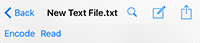
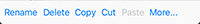
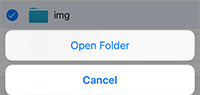
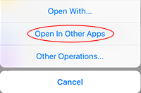
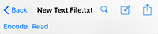
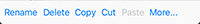
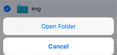
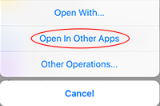

File Management
- Support to view files supported by iOS, like JPG, MOV, PDF, Office files, and iWorks files (may need to be in compressed format, like "Document.pages.zip"). Also, support to view video with formats like RM, RMVB, MKV, FLV, AVI, WMV, OGV, and 3GP, which are not natively supported by iOS.
- Support to view, read, search, and edit text files. When the size of a text file is too big (>50KB), please long-press on the file and choose to open read only in the pop-up menu.

- Support general file operations like copy, paste, rename, delete, cut, and zip; now do not support search. Please tap “Editing”button in the navigation bar first to enter editing mode, select the files you want to operate on, and then tap different operation buttons to fire different file operations. Support swipe-to-delete single file.

- In editing mode, long-pressing on folder and clicking on corresponding pop-up menu will enter the folder (for the convenience of the copy-and-paste file operation).

- Refresh current browsing folder with following methods: pull current list down to some extent and release, long-press on navigation bar and tap “Refresh” pop-up menu, or tap “Refresh” button on navigation bar (available on iPad only).
- If the left panel is visible after you open a document in the main view, you could left swipe on the navigation bar or toolbar to hide the left panel, to have more space to view the document.
- Import files from or export files to other Apps on the same device. In other Apps like Dropbox, when you select a file, there is usually a “Open in” menu, and you can see Crypto Disk App is listed there, and then you could choose to import to this App. On the other side, when you long-press a file outside encrypted volume, there is a menu pops up with option “Open in Other App”, and you could click it to export the file to other Apps that could process the file.

- You may browse directories other than the Documents directory, e.g., the temp and cache directories (such directories must first be allowed to browse by iOS system, though). The top available directory changes immediately after you switch off the “Lock to Documents” switcher in the settings panel. From version 1.6, files temporarily copied out are stored in APP_ROOT/tmp folder (previously they are placed at APP_ROOT/Library/Caches/). Specially, the files start with “Management” under APP_ROOT/Library/Caches/ is the browsing history file of the App, so please keep them if you want to keep your browsing history.
- Support to view, read, search, and edit text files. When the size of a text file is too big (>50KB), please long-press on the file and choose to open read only in the pop-up menu.

- Support general file operations like copy, paste, rename, delete, cut, and zip; now do not support search. Please tap “Editing”button in the navigation bar first to enter editing mode, select the files you want to operate on, and then tap different operation buttons to fire different file operations. Support swipe-to-delete single file.

- In editing mode, long-pressing on folder and clicking on corresponding pop-up menu will enter the folder (for the convenience of the copy-and-paste file operation).

- Refresh current browsing folder with following methods: pull current list down to some extent and release, long-press on navigation bar and tap “Refresh” pop-up menu, or tap “Refresh” button on navigation bar (available on iPad only).
- If the left panel is visible after you open a document in the main view, you could left swipe on the navigation bar or toolbar to hide the left panel, to have more space to view the document.
- Import files from or export files to other Apps on the same device. In other Apps like Dropbox, when you select a file, there is usually a “Open in” menu, and you can see Crypto Disk App is listed there, and then you could choose to import to this App. On the other side, when you long-press a file outside encrypted volume, there is a menu pops up with option “Open in Other App”, and you could click it to export the file to other Apps that could process the file.

- You may browse directories other than the Documents directory, e.g., the temp and cache directories (such directories must first be allowed to browse by iOS system, though). The top available directory changes immediately after you switch off the “Lock to Documents” switcher in the settings panel. From version 1.6, files temporarily copied out are stored in APP_ROOT/tmp folder (previously they are placed at APP_ROOT/Library/Caches/). Specially, the files start with “Management” under APP_ROOT/Library/Caches/ is the browsing history file of the App, so please keep them if you want to keep your browsing history.